DÖRT REK'ATLIK FARZIN KILINIÞI
1- Abdest alýnýp, ayakta olarak kýbleye dönülür. Ayaklarýn arasý dört parmak açýklýkta olur. Kadýnlar, vücûdun þekli belli olmayacak þekilde, tepeden týrnaða kadar örtünür. Yalnýz eller ve yüz açýk kalýr. Ellerini kol aðzýndan dýþarý çýkarmaz. Namazda, kadýnlar için en iyi örtülü olmanýn en kolay þekli, ellerini de örtecek geniþ bir baþörtüsü ve ayaklarýný da örtecek, geniþ ve uzun bir etektir.
Niyet edilir. Mesela,
ikindi namazýnýn sünnetini kýlýp farzýna kalkýnca “Allah rýzâsý için bugünkü
ikindi namazýnýn farzýný kýlmaya niyet ettim” denir. 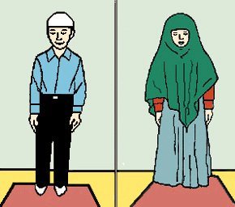
2- “Allahü ekber” diyerek iftitâh tekbîri alýnýr.
Erkekler tekbîr
alýrken; ellerin içi kýbleye karþý ve parmak aralarý normal açýklýkta bulunur.
Baþparmaklar kulak yumuþaðýna deðdirilerek eller yukarýya kaldýrýlýr.
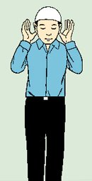
Kadýnlar tekbîr
alýrken; ellerinin içi kýbleye karþý, parmak aralarý normal açýklýkta ve parmak
uçlarý omuz hizâsýna gelecek þekilde ellerini yukarýya kaldýrýrlar.
3- Tekbîrden sonra eller baðlanýr. Kýyamda yani ayakta iken secde edilecek yere bakýlýr.
Erkekler
sað elin avucu, sol elin üzerinde ve sað elin baþ ve küçük parmaðý sol
elin bileðini kavramýþ olarak ellerini göbek altýnda baðlarlar.
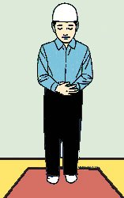
Kadýnlar Sað
el sol elin üzerinde olacak þekilde ellerini göðüs üstüne koyarlar. Erkeklerde
olduðu gibi sað elin parmaklarý ile sol elin bileðini kavramazlar. Elleri baþ
örtüsünün altýnda tutmaya çalýþmalýdýr.
Ayakta sýrasýyla;
- Sübhâneke,
- Eûzü Besmele
- Fâtiha sûresi
- Zamm-ý sûre okunur. Meselâ, innâa'taynâ... okunur. (Zamm-ý sûre, namazda okunan sûrelere denir.)
4- “Allahü ekber” diyerek rükü’a varýlýr yani bel doksan derece eðilir ve burada en az üç defa “Sübhâne rabbiyel-azîm” denilir. Rükü’da iken ayaklarýn üzerine bakýlýr.
Erkekler
rükü’da, parmaklarýný açýp, dizlerin üstüne kor. Sýrtýný ve baþýný düz tutar.
Bacaklarýný ve kollarýný dik tutarlar.
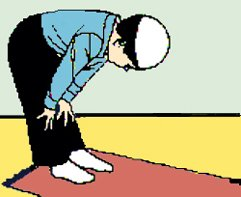
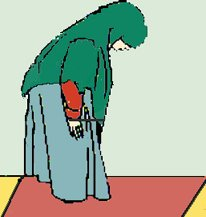
Üç defa “Sübhâne
rabbiyel-azîm” dedikten sonra, “Semi’allahü limen hamideh” diyerek
rükü’dan kalkýlýr ve ayakta “Rabbenâ lekel-hamd” denilir.
5-Sonra, "Allahü ekber" diyerek secdeye varýlýr.
Secdeye inerken önce dizler, sonra eller, daha sonra da burun
ve alýn yere konur. Secdede baþ iki elin arasýnda ve hizâsýnda bulunur. El parmaklarý
birbirine bitiþiktir. Secdede iken ayaklar kaldýrýlmaz. Secdede gözler kapalý
olmaz. Burada en az üç kere “Sübhâne rabbiyel-a’lâ” denilir.
Erkekler, secdede
dirseklerini yanlarýndan uzak, kollarýný yerden kalkýk bulundururlar. Ayaklar,
parmaklar üzerine dik tutulur ve parmak uçlarý kýbleye gelecek þekilde yere
konur.
Kadýnlar, secdede kollarýný yanlarýna bitiþik hâlde bulundururlar.
Ayaklar bitiþik
olarak parmaklar üzerine dik tutulur ve parmak uçlarý kýbleye gelecek þekilde
kývrýlarak yere konur.
6- “Allahü ekber” diyerek baþýný secdeden kaldýrýp diz üstü oturulur. Otururken, parmaklar dizlerin hizâsýna gelecek þekilde eller uyluklarýn üzerine konur ve kucaða bakýlýr. Burada “Sübhânallah” diyecek kadar kýsa bir an oturulur.
Bu oturuþta
erkekler, sol ayaðýný yere yayarak onun üzerine oturur, sað ayak, parmaklarý
kýbleye yönelmiþ durumda dik tutulur. 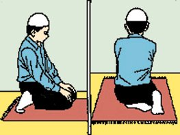
Kadýnlar ise,
ayaklarýný yatýk olarak sað tarafýna çýkarýr ve öylece otururlar.
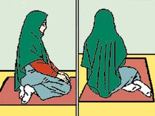
Sonra, “Allahü
ekber” diyerek ikinci defa secdeye varýlýr ve yine en az üç kere “Sübhâne
rabbiyel-a’lâ” denilir.
7- “Allahü ekber” diyerek secdeden ayaða (ikinci rek’ata) kalkýlýr ve eller baðlanýr.
Ýkinci rek’atte sýrasýyla;
- Besmele,
- Fâtiha,
- Zamm-ý sûre okunur.
Sonra, birinci rek’atta olduðu gibi, “Allahü ekber” diyerek rükü’a varýlýr ve en az üç kere “Sübhâne rabbiyel-azîm” denilir.
8- “Semi’allahü limen hamideh” diyerek rükûdan ayaða kalkýlýr ve ayakta “Rabbenâ lekel-hamd” denilir.
Sonra “Allahü ekber” diyerek secdeye varýlýr. Birinci rek’atte olduðu gibi yine en az üç kere “Sübhâne rabbiyel-a’lâ” denilir.
Sonra, “Allahü ekber” diyerek secdeden kalkýlýp oturulur ve burada “Sübhânallah” diyecek kadar kýsa bir an oturulur.
Sonra, “Allahü ekber” diyerek ikinci defa secdeye varýlýr ve en az üç kere “Sübhâne rabbiyel-a’lâ” denilir.
9- “Allahü ekber” diyerek secdeden doðrulup oturulur.
Otururken, el parmaklarý dizlerin hizâsýna gelecek þekilde uyluklarýn üzerine konur ve kucaða bakýlýr. Buna ilk oturuþ ya'ni kâdei ula denir.
Ettehýyyatüyü okuyup üçüncü rek’eta kalkýlýr.
Üçüncü rekatte, Fatiha'yý okur, rüku ve secdeyi yapýp, dördüncü rek'ate kalkar. Dördüncü rek'atte yine Fatiha okunur sonra rüku ve secde yapýlarak kâde-i ahýre yani son oturuþa oturulur.
Oturuþta sýrasýyla;
- Ettehýyyâtü,
- Allahümme salli,
- Allahümme bârik,
- Rabbenâ âtinâ...duâlarý okunur.
Erkekler, sol ayaðýný yere yayarak onun üzerine oturur, sað ayak parmaklarý kýbleye yönelmiþ durumda dik tutulur.
Kadýnlar, ayaklarýný yatýk olarak sað tarafa çýkarýr ve öylece otururlar.
10- Önce
baþýný saða çevirerek “Esselâmü aleyküm ve rahmetullah” denir. Selâm
verirken omuzlara bakýlýr.
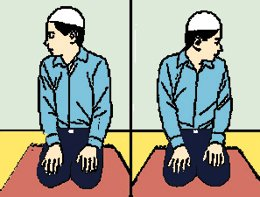
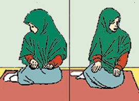
Sonra baþýný sola çevirerek sað tarafta olduðu gibi yine, “Esselâmü aleyküm ve rahmetullah” denilir. Böylece dört rek’at namaz tamamlanmýþ olur.
Bundan sonra, üç kere "Estagfirullah" denir, sonra, "Âyet-el-kürsî" okunur ve tesbih çekilir. Yani, otuzüç defa, Sübhânallah, otuzüç defa Elhamdülillah, otuzüç defa Allahü ekber denir. Sonra, Lâ ilâhe illallahü vahdehû lâ þerîkeleh, lehülmülkü ve lehül hamdü ve hüve alâ külli þey'in kadîr, denir. Bunlarý sessizce okumalýdýr. Yüksek sesle okumak bid’attýr.
Daha sonra duâ
edilir. Duâ ederken, eller göðüs hizâsýna kaldýrýlýr. Eller göðe doðru açýlarak
avuçlarýn içi yüze doðru biraz meyilli tutulur ve iki elin arasý açýk bulundurlur.
Dirsekler yanlara yapýþýk olmaz.
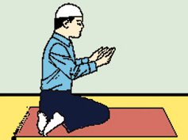
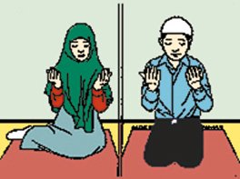
Dört rek’atlý sünnetlerin
ve farzlarýn ikinci rek’atýndan sonra Tehýyyat okuyup kalkýlýr. Sünnetlerin
üç ve dördüncü rek’atlarýnda Fâtiha'dan sonra, zamm-ý sûre okunur. Farzlarýn
üçüncü ve dördüncü rek’atlarýnda yalnýz Fâtiha okunur, zamm-ý sûre okunmaz.
Akþamýn farzý da böyledir. Ya’nî üçüncü rek’atýnda zamm-ý sûre okunmaz. Vitrin
üçünçü rek’atýnda da, Fâtiha ve zamm-ý sûre okunduktan sonra tekbîr getirip
eller yanlara salýnmadan erkekler iftitah tekbirinde olduðu gibi kulaklarýna,
kadýnlar omuz hizâsýna kaldýrýr. Sonra "Kunut" duâlarý okunur.
Gayr-i müekked olan ikindinin ve yatsýnýn önceki sünnetleri de diðer dört rek’atlý
sünnetler gibidir. Ancak, ikinci rek’attan sonraki oturmada Tehýyyattan sonra
Allahümme salli ve bârik de okunur. Ayrýca, üçüncü rek’ate ayaða kalkýldýðý
zaman, birinci rek’atte olduðu gibi, Fâtiha ve zamm-ý sûreden önce Sübhâneke
ve sonra Eûzü Besmele de okunur.Yani, Eûzübillahi mineþþeytânirracîm,
Bismillâhirrahmânirrahîm, denir.
Eûzü , Eûzübillahi mineþþeytânirracîm; Besmele, Bismillâhirrahmânirrahîm, demektir.